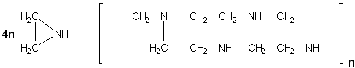

|
|
Artificial enzymesA number of possibilities now exist for the construction of artificial enzymes. These are generally synthetic polymers or oligomers with enzyme-like activities, often called synzymes. They must possess two structural entities, a substrate-binding site and a catalytically effective site. It has been found that producing the facility for substrate binding is relatively straightforward but catalytic sites are somewhat more difficult. Both sites may be designed separately but it appears that, if the synzyme has a binding site for the reaction transition state, this often achieves both functions. Synzymes generally obey the saturation Michaelis-Menten kinetics as outlined in Chapter 1. For a one-substrate reaction the reaction sequence is given by synzyme + S Some synzymes are simply derivatised proteins, although covalently immobilised enzymes are not considered here. An example is the derivatisation of myoglobin, the oxygen carrier in muscle, by attaching (Ru(NH3)5)3+ to three surface histidine residues. This converts it from an oxygen carrier to an oxidase, oxidising ascorbic acid while reducing molecular oxygen. The synzyme is almost as effective as natural ascorbate oxidases. It is impossible to design protein synzymes from scratch with any probability of success, as their conformations are not presently predictable from their primary structure. Such proteins will also show the drawbacks of natural enzymes, being sensitive to denaturation, oxidation and hydrolysis. For example, polylysine binds anionic dyes but only 10% as strongly as the natural binding protein, serum albumin, in spite of the many charges and apolar side-chains. Polyglutamic acid, however, shows synzymic properties. It acts as an esterase in much the same fashion as the acid proteases, showing a bell-shaped pH-activity relationship, with optimum activity at about pH 5.3, and Michaelis-Menten kinetics with a Km of 2 mm and Vmax of 10−4 to 10−5 s−1 for the hydrolysis of 4-nitrophenyl acetate. Cyclodextrins (Schardinger dextrins) are naturally occurring toroidal molecules consisting of six, seven, eight, nine or ten a-1, 4-linked D-glucose units joined head-to-tail in a ring (a-, b-, g-, d- and e-cyclodextrins, respectively: they may be synthesised from starch by the cyclomaltodextrin glucanotransferase (EC 2.4.1.19) from Bacillus macerans). They differ in the diameter of their cavities (about 0.5-1 nm) but all are about 0.7 nm deep. These form hydrophobic pockets due to the glycosidic oxygen atoms and inwards-facing C-H groups. All the C-6 hydroxyl groups project to one end and all the C-2 and C-3 hydroxyl groups to the other. Their overall characteristic is hydrophilic, being water soluble, but the presence of their hydrophobic pocket enables them to bind hydrophobic molecules of the appropriate size. Synzymic cyclodextrins are usually derivatised in order to introduce catalytically relevant groups. Many such derivatives have been examined. For example, a C-6 hydroxyl group of b-cyclodextrin was covalently derivatised by an activated pyridoxal coenzyme. The resulting synzyme not only acted a transaminase (see reaction scheme [1.2]) but also showed stereoselectivity for the L-amino acids. It was not as active as natural transaminases, however. Polyethyleneimine is formed by polymerising ethyleneimine to give a highly branched hydrophilic three-dimensional matrix. About 25% of the resultant amines are primary, 50% secondary and 25% tertiary:  [8.6] Ethyleneimine polyethyleneimine The primary amines may be alkylated to form a number of derivatives. If 40% of them are alkylated with 1-iodododecane to give hydrophobic binding sites and the remainder alkylated with 4(5)-chloromethylimidazole to give general acid-base catalytic sites, the resultant synzyme has 27% of the activity of a-chymotrypsin against 4-nitrophenyl esters. As might be expected from its apparently random structure, it has very low esterase specificity. Other synzymes may be created in a similar manner. Antibodies to transition state analogues of the required reaction may act as synzymes. For example, phosphonate esters of general formula (R-PO2-OR')− are stable analogues of the transition state occurring in carboxylic ester hydrolysis. Monoclonal antibodies raised to immunising protein conjugates covalently attached to these phosphonate esters act as esterases. The specificities of these catalytic antibodies (also called abzymes) depends on the structure of the side-chains (i.e., R and R' in (R-PO2-OR')−) of the antigens. The Km values may be quite low, often in the micromolar region, whereas the Vmax values are low (below 1 s−1), although still 1000-fold higher than hydrolysis by background hydroxyl ions. A similar strategy may be used to produce synzymes by molecular 'imprinting' of polymers, using the presence of transition state analogues to shape polymerising resins or inactive non-enzymic protein during heat denaturation. This page was established in 2004 and last updated by Martin
Chaplin |